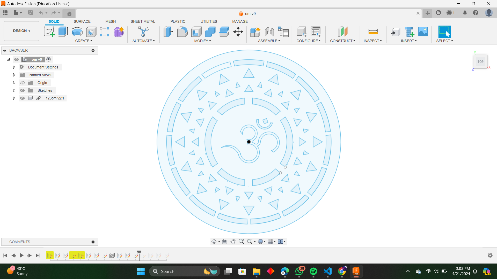
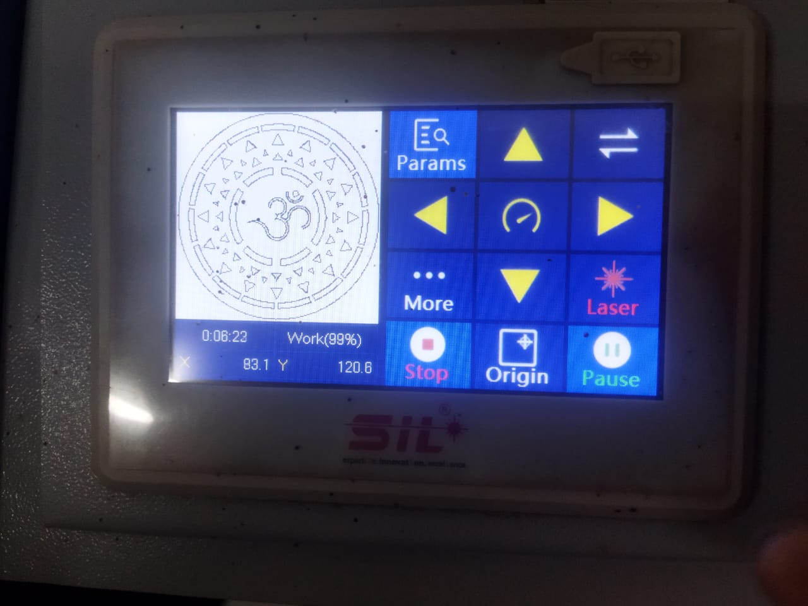
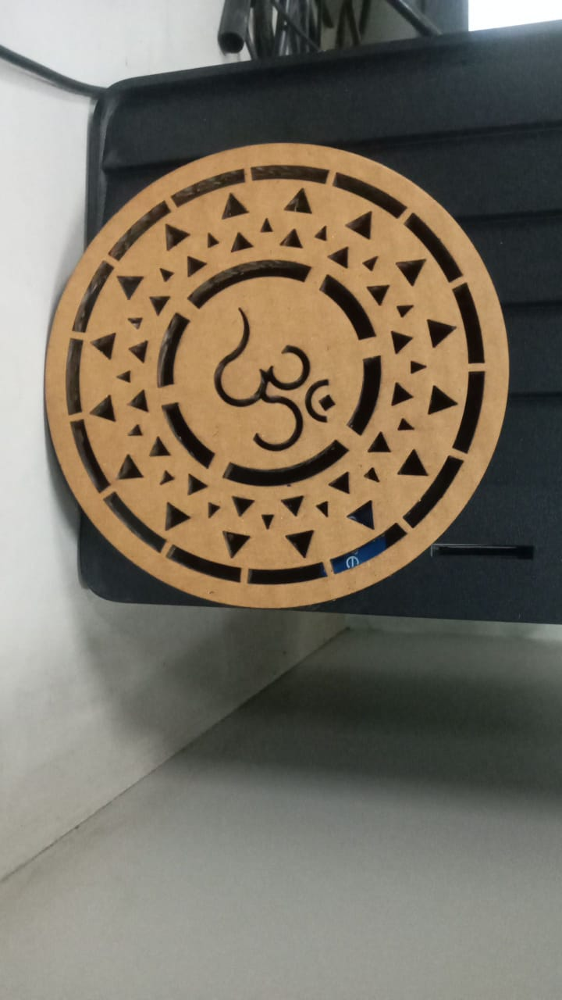
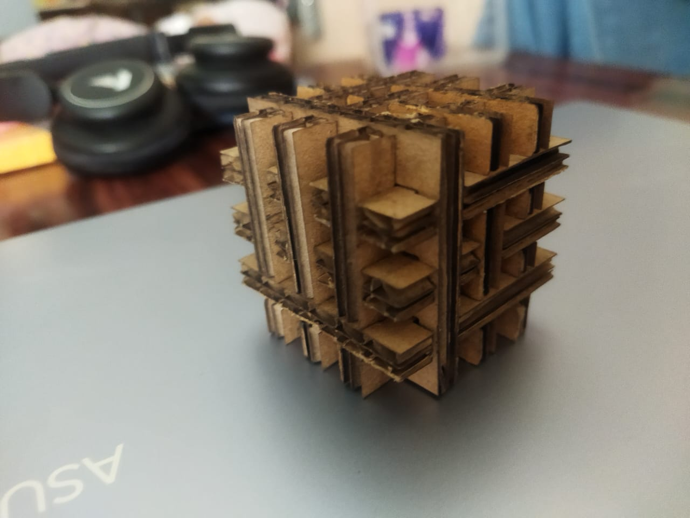

  
Press Fit
Press fit is a technique used in various manufacturing processes, including laser cutting, where parts are designed to fit together tightly without the need for adhesives or fasteners. In laser cutting, press fit involves creating parts with precise tolerances so they can be assembled by simply pushing them together, relying on the friction between the surfaces to hold them securely. This method is popular in the fabrication of prototypes, assemblies, and even finished products made from materials suitable for laser cutting, such as acrylic, wood, and some metals.
